Activity: Blend between faces
This activity demonstrates the process of placing blends between faces of a model.
Learn how to define constant and variable radius blends, as well as how to use a tangent hold line.
Click here to download the activity file.
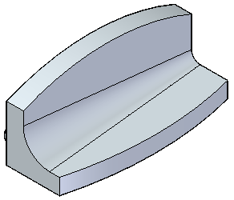
-
Open the part file blends.par. Place a blend on the inside of the support bracket.
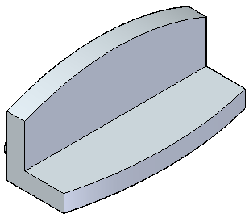
On the Home tab→Solids group→Round list, choose the Blend command.
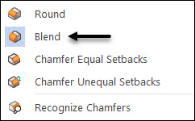
On command bar, select the Blend option.
Select the two faces shown.
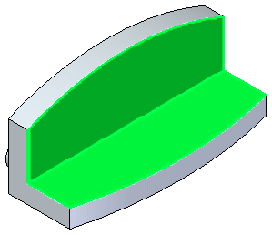
For the Shape, keep the default Tangent Continuous and type a radius of 40 mm.
Click the Accept button.
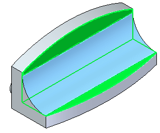
On the command bar, select the Tangent Hold Line option .
Select the Full Radius option .
You are prompted to click on an edge chain representing the tangent hold line.
Select the two curved edges.
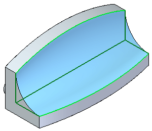
Click Accept and then click Finish.
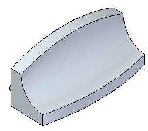
To see how the other Blend options work, undo the previous operation. Choose the Blend command again. Select Blend as the blend type. For the shape, click Tangent Continuous. Select the same two faces as before. Type 60 mm for the radius and click the Accept button. This time on the Overflow step, select the Roll Along/Across option .
Ignore the error that blend radius is too large.
Select the two curved edges as the edge chains. The preview appears.
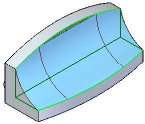
Click Accept and then click Finish.
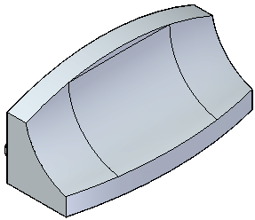
Undo the previous blend operation.
Choose the Blend command again.
In the Blend Type step, select the Variable radius option.
Select and Accept the interior edge.
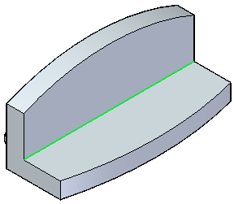
The Select Vertices step prompts you to select the end points. Move the cursor to the edge location shown and click when the endpoint highlights. Type 30 mm and Accept for the left-side radius.
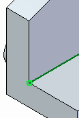
Move the cursor to the end of edge shown and click when the endpoint highlights. On the command bar, type 10 mm for the right-side and then click Accept.
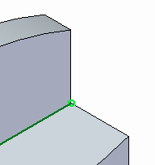
The blend preview appears.
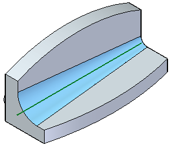
Click Finish.
Save and close the part file.
In this activity you learned how to place a blend between two surfaces. There are a few options available for placing a blend. Experiment with these options.
-
Click the Close button in the upper-right corner of this activity window.